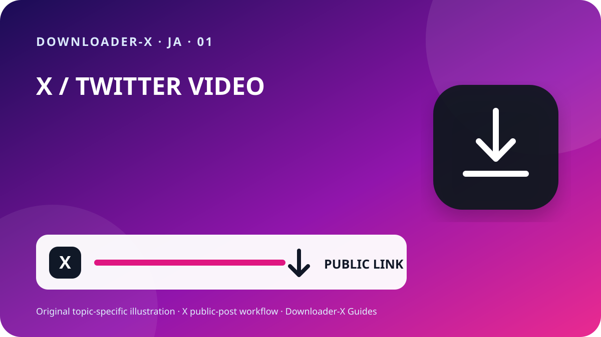

要点
twitter 動画保存 オンライン — 自分が所有する動画、利用許可を得た動画、または適合するライセンスの公開動画を保存する場合は、まず対象のX投稿を単独で開きます。共有メニューから「ポストのリンクをコピー」を選び、そのURLをDownloader-Xに貼り付けます。結果に実際に表示されたMP4と画質を選び、保存後に冒頭・中間・末尾を再生して映像と音声を確認してください。公開リンクの処理に、Xのパスワード、確認コード、ブラウザCookie、遠隔操作は不要です。

Downloader-X を使う3つの手順
- 入力するリンクは、動画がある一件の投稿を特定できる必要があります。Xの共有メニューから投稿リンクをコピーし、別タブで一度開いて確認します。プロフィールURLやタイムラインURLは複数の投稿を含むため、対象動画を特定できません。この事前確認により、リンクの誤りとサービス側のエラーを分けて考えられ、未完了ファイルを何度も作る操作も減らせます。
- 確認済みURLをXダウンローダーに貼り付け、処理は一度だけ開始します。結果が表示されたら、タイトルやプレビューが元投稿と同じか確認します。選べるのは、結果に実際に表示された形式と解像度だけです。元データが提供していない4Kや1080pを当然のように期待してはいけません。失敗時には明確なエラーが表示されるべきで、HTMLページ、インストーラー、別形式のファイルを動画成功として扱わないでください。
- 進行表示が消えただけでは完了とは言えません。動画として正しく開けることを確認してから保管または共有します。
この検索語が意味すること
twitter 動画保存 オンライン. 公開投稿のみが対象です。形式と画質は配信元が実際に返す選択肢によって決まります。
1. 公開状態と利用権限を確認する
プロフィール、検索結果、転送された画像ではなく、動画を含む元の投稿から始めます。新しいタブでURLを開き、アカウント名、本文、サムネイル、長さが一致するか確認します。公開されていることは、再投稿、編集、販売、広告利用を自由に行えるという意味ではありません。保護アカウント、削除済み投稿、特別なログインが必要な投稿、地域や年齢で制限された投稿では、制限を回避せず、所有者に許可されたコピーを依頼してください。
公開表示はアクセス設定であり、利用許諾ではありません。自分の動画、適合するライセンスの動画、明確な許可を得た動画だけを保存します。再投稿、編集、商用利用を行う場合は、その用途を許可が含むか確認し、書面を保管してください。映像に個人情報、私的な場所、未成年者が含まれる場合は、公開投稿であってもプライバシーと同意を慎重に扱い、他人の作品を自分のものとして表示しないでください。
2. 投稿そのもののURLをコピーする
入力するリンクは、動画がある一件の投稿を特定できる必要があります。Xの共有メニューから投稿リンクをコピーし、別タブで一度開いて確認します。プロフィールURLやタイムラインURLは複数の投稿を含むため、対象動画を特定できません。この事前確認により、リンクの誤りとサービス側のエラーを分けて考えられ、未完了ファイルを何度も作る操作も減らせます。
元の動画投稿を開き、投稿単体のページに移動します。
共有から投稿リンクをコピーし、URLを手入力しません。
x.comまたはtwitter.comの投稿URLであることを確認します。
新しいタブで開き、アカウント・本文・動画が一致するか確認します。
元URLと利用許可の記録を保存ファイルと一緒に保管します。
3. URLを貼り付け、実在する結果だけを選ぶ
確認済みURLをXダウンローダーに貼り付け、処理は一度だけ開始します。結果が表示されたら、タイトルやプレビューが元投稿と同じか確認します。選べるのは、結果に実際に表示された形式と解像度だけです。元データが提供していない4Kや1080pを当然のように期待してはいけません。失敗時には明確なエラーが表示されるべきで、HTMLページ、インストーラー、別形式のファイルを動画成功として扱わないでください。
4. 元データと用途に合わせてHDを選ぶ
HDという表示は、公開投稿から実際に取得できる動画候補に基づく必要があります。スマートフォンやノートPCでは720pが画質、通信量、容量のバランスを取りやすく、1080pは元投稿が提供し、大きな画面で細部が必要な場合に適しています。同じ解像度でもビットレート、コーデック、圧縮の違いで見え方は変わります。ファイル名だけで判断せず再生してください。音声が必要な場合は、映像と音声を含む候補を選び、保存直後に確認します。
5. iPhone、Android、パソコンで保存する
iPhoneとiPadでは、Safariのダウンロードは通常「ファイル」アプリのダウンロードフォルダまたは設定した保存先にあります。Androidではブラウザのダウンロード一覧かFilesアプリを確認します。Windows、macOS、Linux、ChromeOSでは、ダウンロードフォルダとブラウザ履歴を確認してから再操作してください。容量不足なら不要ファイルを削除するか解像度を下げます。動画のためだけに不明なダウンロード管理アプリをインストールする必要はありません。
6. 保存したファイルを検証する
進行表示が消えただけでは完了とは言えません。動画として正しく開けることを確認してから保管または共有します。
選択した動画形式、たとえばMP4であり、HTMLや実行ファイルではない。
ファイルサイズが0ではなく、長さと画質に対して不自然ではない。
冒頭・中間・末尾で映像、長さ、音声を再生できる。
ファイル名、保存先、元URL、許可やライセンスを記録している。
長期保存する前に出所を記録する
複数の動画を扱う場合は、アカウント名、投稿日、固定URL、短い内容説明、選択画質、ファイルサイズ、保存できる根拠を一覧にします。これにより、後から出所不明になることを防ぎ、クレジットやライセンス条件を確認できます。引用投稿、返信、スレッドでは、動画を実際に持つ投稿のURLを記録し、単に引用している側のURLと混同しないでください。
元投稿から保存ファイルへ順番に切り分ける
動画投稿に戻って共有からURLをコピーします。プロフィールは一つの動画を特定しません。
保護または制限された可能性があります。資格情報やCookieを渡さず、所有者に許可されたコピーを依頼します。
投稿が存在し、ネイティブ動画を含み、コピーしたURLで開けるか確認し、一度だけ更新します。
そのファイルを削除し、拡張子を変更せず、URLと動画候補を最初から確認します。
元投稿と端末の音量を確認し、別の信頼できる再生アプリで試します。必要なら音声込み候補を選びます。
安全性とプライバシー
公開リンクの処理に、Xのパスワード、二段階認証コード、Cookieの書き出し、遠隔操作、実行ファイル、端末保護の無効化は不要です。.exeや.dmg、関係のないブラウザ拡張を要求されたら中止してください。開く前にドメイン、拡張子、配布元を確認します。共有端末では、許可されたファイルを公開フォルダから移動し、不要になった一時コピーを削除してください。
重複を避けて整理する
ファイル名には短い題名、アカウント、日付、画質を含めます。例は topic_creator_2026-08-30_720p.mp4 です。仮保存と検証済みのフォルダを分け、必要な画質だけを残します。何度押しても画質は向上せず、同名ファイルや未完了コピーが増えるだけです。元URL、クレジット、利用条件を同じプロジェクトのメモまたは表に保管します。
最後の60秒チェック
URLは正しい動画投稿を開く。
アクセス制御を回避せず公開状態を確認できる。
所有権または保存許可がある。
サービスは資格情報やCookieを要求しない。
選択画質は実際の結果に表示された。
端末に十分な空き容量がある。
形式とサイズが不自然ではない。
映像と音声を最後まで確認した。
元URLとクレジットを記録した。
今後の利用が許可範囲を超えない。
よくある質問
twitter 動画保存 オンライン?
公開投稿のみが対象です。形式と画質は配信元が実際に返す選択肢によって決まります。
1080pがない投稿があるのはなぜですか
解像度は元投稿と実際に取得できる候補に依存するためです。
HTMLが保存された場合はどうしますか
削除して拡張子を変えず、元URLと動画候補を再確認します。
保護アカウントから保存できますか
できません。このガイドは公開投稿のみを対象とし、制限回避は扱いません。
iPhoneの保存先はどこですか
通常は「ファイル」アプリのダウンロードまたはSafariで設定した場所です。
関連する X ガイド
正確な公開投稿リンクを使用する
公開投稿のみが対象です。形式と画質は配信元が実際に返す選択肢によって決まります。
Downloader-X を開く